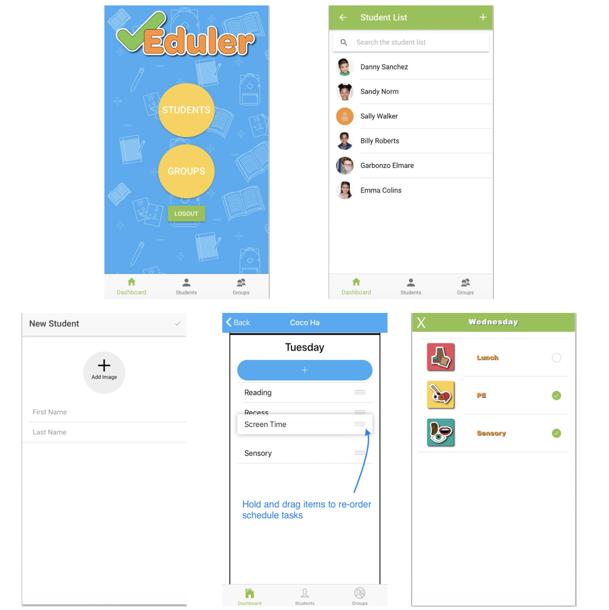

📌 Tools
- Collect & Export Functions (CLI) Extracts all functions + import statements from a specific file or a collection of files from a directory and exports to another file. Currently only supports python syntax. Here's the GitHub repo.
- FPS (Jupyter notebook) Breaks videos into frames given optional parameters of frames-per-second, resolution, and export organization. Here's the GitHub repo.
- s3-imgurl-upload (NPM package) An npm package created to upload an image from a url to a AWS S3 bucket. Here's the NPM package and GitHub repo.
🖍 Some in-progress projects
- Q (cal hacks 2020) A mobile app that uses Fords Api & music streaming services apis to build a music queue for passangers to modify in real-time. Some features include: connecting a music streaming service, approving/denying song requets & priority (optional), adding users with restricted roles, and saving music queues as playlists.
- Programming Packages Currently working on creating packages for python & elixir.
💡 Some past projects
- Eduler A mobile app designed to function as a scheduling tool built for teachers to use. It aims to facilitate the creation and tracking progress of a personalized education for students. 